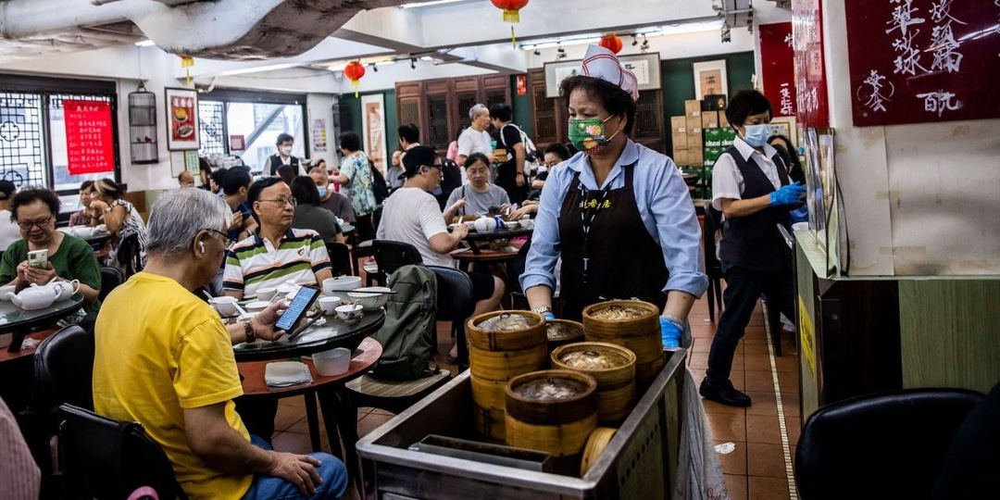

How to Order Food in Hong Kong With 0 Cantonese
Hand signals, QR codes, tea charges, and paying — ordering food in Hong Kong as a student who doesn’t speak Cantonese.
You can eat here all semester without Cantonese. Here’s the system:
- Getting seated: Hold up fingers for your party size. That’s it.
- Ordering: Point at the menu or show a phone photo. “This one” + pointing gets you shockingly far. Google Lens handles all-Chinese menus.
- Tea charge: A few dollars per person. Not a scam — just take the tea.
- QR codes: Many places have scan-and-order apps, but they often need a local number — ask a friend to order for the table at first.
- Street food: Point, hold up fingers for quantity, hand over cash. The egg waffle guy near my campus has understood zero of my Cantonese for four months. We get along great.
- Paying: Cash for small places, Octopus card almost everywhere. Tipping isn’t expected beyond rounding up.
